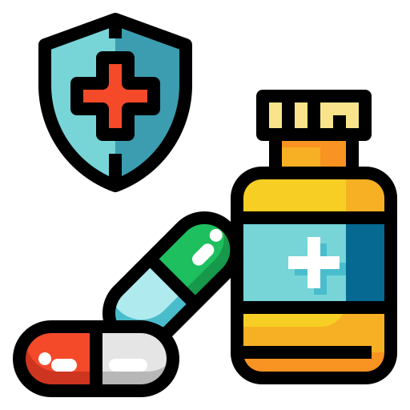
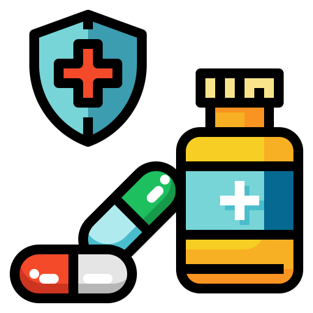

Farmacia San Juan 
Farmacia San Juan Nuestra misión en Farmacia San Juan es brindar a la comunidad de San Juan Argueta acceso a productos farmacéuticos seguros, eficaces y de alta calidad. Nos esforzamos por ofrecer un servicio personalizado y de confianza, contribuyendo al bienestar general de nuestros clientes mediante asesoramiento experto y una atención excepcional.
Aspiramos a ser la farmacia de referencia e Aldea San Juan Argueta, conocida por nuestra dedicación al bienestar de nuestros clientes y la calidad de nuestros productos y servicios. Buscamos ser un pilar en el cuidado de la salud, proporcionando soluciones innovadoras y accesibles que mejoren la calidad de vida de nuestra comunidad.
En la pintoresca Aldea San Juan Argueta, ubicada en un rincón sereno del país, se encuentra la Farmacia San Juan, situada en la Calle Principal. Abrió sus puertas en el año 2020, y su historia es un testimonio de visión y compromiso comunitario.
Todo comenzó cuando la esposa del dueño, María Par, observó la necesidad urgente de un establecimiento que ofreciera medicamentos de calidad a precios accesibles. La pareja, con un profundo deseo de contribuir al bienestar de su comunidad, decidió embarcarse en este nuevo emprendimiento. La motivación inicial fue doble: por un lado, mejorar los ingresos familiares y, por otro, satisfacer una necesidad vital en la aldea.
Su compromiso con la calidad, la atención al cliente y la disponibilidad de una amplia gama de productos farmacéuticos y de cuidado de la salud contribuyó a su crecimiento y éxito continuo. Además de ofrecer medicamentos y productos farmacéuticos, las Farmacias Batres también proporcionan servicios como consultas médicas, toma de muestras para análisis clínicos y asesoramiento sobre salud y bienestar.
Desde su inauguración, la Farmacia San Juan, bajo la dirección de Dolmo Sulugüi y María Par, se destacó por su enfoque en la accesibilidad y calidad de sus productos. Con el tiempo, se dieron cuenta de que podían hacer aún más por sus vecinos. Así, expandieron sus servicios para incluir consultas médicas, brindando asesoramiento y atención de salud a aquellos que más lo necesitaban.
En la actualidad, la Farmacia San Juan ha crecido notablemente, asegurando que siempre haya disponibilidad para la población de San Juan Argueta. La dedicación de sus dueños a ofrecer servicios de salud asequibles y de alta calidad ha convertido a la farmacia en un pilar de la comunidad.
Amplia selección de medicamentos prescritos por profesionales de la salud.
Productos disponibles sin necesidad de receta médica para tratar diversas afecciones comunes.
Artículos para el cuidado de la salud y la higiene personal.
Suplementos para apoyar la salud y el bienestar general.
Asesoramiento profesional y personalizado para ayudar a nuestros clientes a manejar sus necesidades de salud y medicamentos.
 servicioalcliente@cbsa.com.gt
servicioalcliente@cbsa.com.gt
Siempre sigue nuestras las indicaciones. No te automediques y no interrumpas un tratamiento sin consultar antes.

Pregúntanos por posibles efectos secundarios de los medicamentos que consumes y qué hacer si los experimentas.
Guarda los medicamentos en lugares frescos y secos, y fuera del alcance de los niños. Evita la exposición directa al sol o a temperaturas extremas.
Lleva un control de tus medicamentos, especialmente si tomas varios, para evitar errores de dosis o interacciones entre ellos.
Si tienes dudas sobre algún medicamento o cómo tomarlo, consúltanos siempre, estamos capacitados para ayudarte.
Mantén una dieta equilibrada y una adecuada hidratación, que pueden complementar los efectos de los tratamientos farmacológicos.